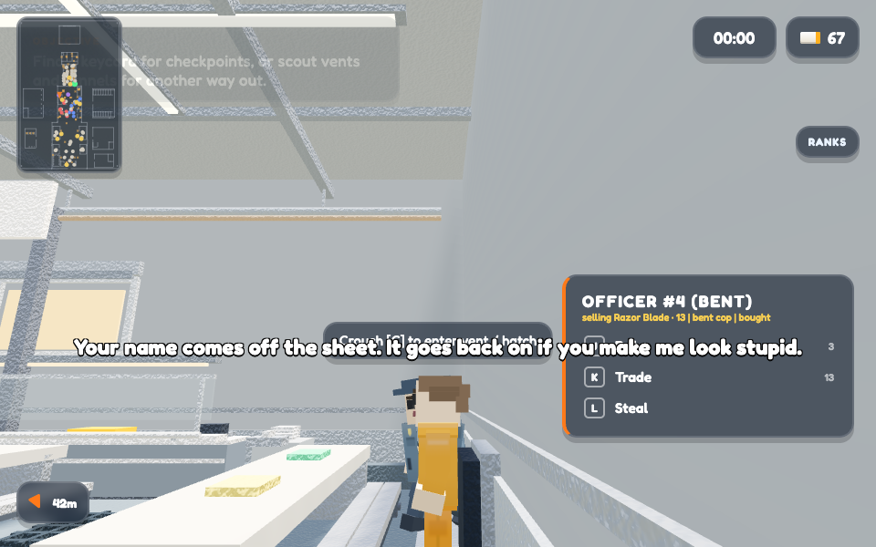
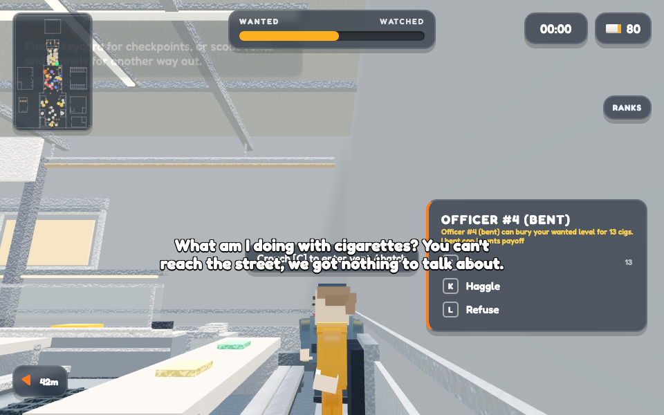
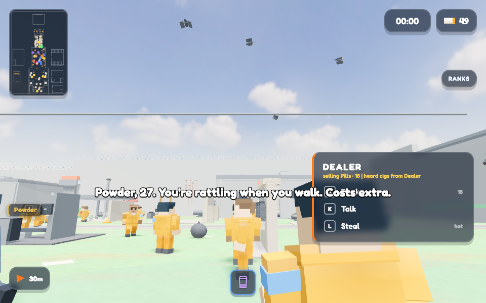
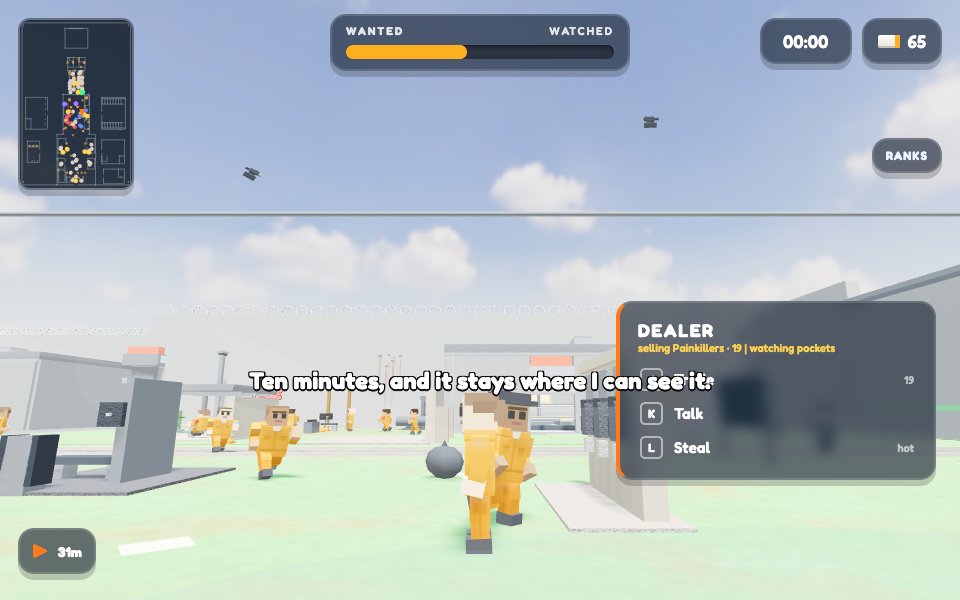
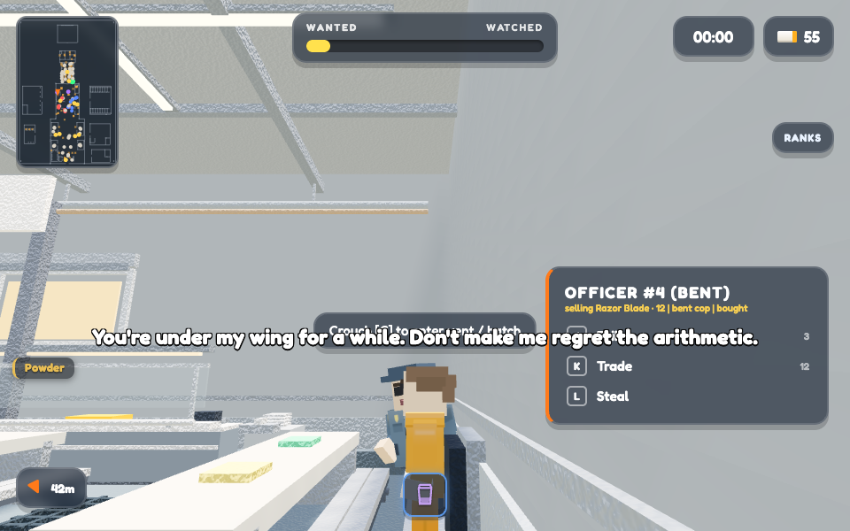
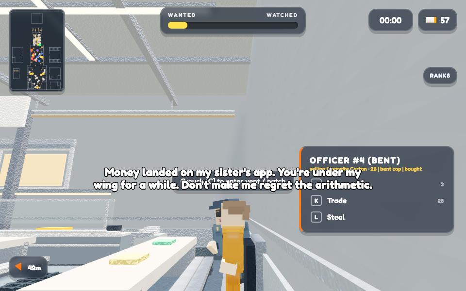

PRISON_PHONE_BRIDGE on/off, same checkout, same seed. Deep staff services (clean sheet, racket cut, bought statement, a name off the log) now need a line to the street; the moments of blindness stay priced in smokes.
Frames: 960x600
http://127.0.0.1:8966/index.html?seed=90210&cfg_PRISON_PHONE_BRIDGE=0&visualCompare=before-1787679251898http://127.0.0.1:8966/index.html?seed=90210&visualCompare=after-1787679255342Generated August 25, 2026 at 1:34 PM. Every pair uses the actual registered model builder from its source URL. The runner holds subject, random seed, viewport, camera framing, backdrop, and lighting constant so the source change is the variable.
cigsSpent is measured across the press. serviceInPool draws econ.pickOffer up to 400 times and asks whether a service ever comes out. quoteGap is 0 on a beat where nothing was sold.
| Subject | Metric | Before | After | Δ |
|---|---|---|---|---|
| The clean sheet, holding only smokes, Renting ten minutes on a handset | Player can reach the street 1=yes | 0 | 0 | 0 |
| The clean sheet, holding only smokes | Deep service actually transacted 1=yes | 1 | 0 | -100% |
| The clean sheet, holding only smokes | Cigarettes that left the pocket cigs | 13 | 0 | -100% |
| The clean sheet, holding only smokes, The racket cut, with the window open | Stock pool can produce PHONE TIME 1=yes | 0 | 0 | 0 |
| The clean sheet, holding only smokes | Length of what the officer said chars | 74 | 90 | +22% |
| All 3 matched captures | Price quoted minus price taken cigs | 0 | 0 | 0 |
| Renting ten minutes on a handset, The racket cut, with the window open | Deep service actually transacted 1=yes | 1 | 1 | 0% |
| Renting ten minutes on a handset | Cigarettes that left the pocket cigs | 27 | 15 | -44% |
| Renting ten minutes on a handset | Stock pool can produce PHONE TIME 1=yes | 0 | 1 | +1 |
| Renting ten minutes on a handset | Length of what the officer said chars | 55 | 45 | -18% |
| The racket cut, with the window open | Player can reach the street 1=yes | 1 | 1 | 0% |
| The racket cut, with the window open | Cigarettes that left the pocket cigs | 25 | 23 | -8% |
| The racket cut, with the window open | Length of what the officer said chars | 70 | 103 | +47% |
Before: a career-ending favour bought with tobacco. After: the once-per-officer explanation of why it is not.


Is PHONE TIME actually reachable through the real stock pool, and does the seller state his terms?


The rented line lets the deep service through — and the officer says once where the money really landed.

